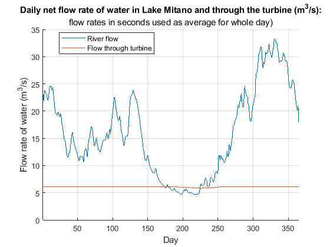

load("flow_in.mat");
volume=zeros(1,365);
power=zeros(1,365);
height=zeros(1,365);
flow_out=zeros(1,365);
full_vol=1.5333333e7;
height(1)=50;
length=5750;
max_flow=6.1;
area_ps=max_flow/sqrt(2*9.81*height(1));
turbine_eff=0.9;
vol_out=max_flow*24*60*60;
vol_in=flow_in(1)*24*60*60;
flow_out(1)=max_flow;
volume(1)=full_vol;
power(1)=max_flow*1000*9.81*height(1)*turbine_eff;
for i=[2:1:365]
vol_in=flow_in(i)*24*60*60;
vol_out=max_flow*24*60*60;
volume(i)=volume(i-1)+vol_in-vol_out;
if volume(i)> full_vol
height(i)=50;
volume(i)=full_vol;
flow_out(i)=max_flow;
power(i)=max_flow*1000*9.81*height(1)*turbine_eff;
elseif volume(i)<full_vol
height(i)=((volume(i)*3)/368)^(1/3);
vary_flow=area_ps*sqrt(2*9.81*height(i));
flow_out(i)=vary_flow;
power(i)=vary_flow*1000*9.81*height(i)*turbine_eff;
end
end
figure()
title("Daily net flow rate of water in Lake Mitano and through the turbine: (m^3/s)",...
"flow rates in seconds used as average for whole day)")
grid on
xlabel("Day")
ylabel("Flow rate of water (m^3/s)")
hold on
plot(1:365,flow_in,'LineWidth',1)
plot(1:365,flow_out)
xlim([1,365])
legend("River flow","Flow through turbine","Location", "Best")
figure()
title("Daily power output (MW) and water flow rate (m3/s) through turbine:",...
"(flow rates in seconds used as average for whole day)")
grid on
xlabel("Day")
hold on
plot(1:365, power/(10^6),'LineWidth',1)
ylabel("Power output (MW)")
plot(1:365, flow_out,'LineWidth',1)
yyaxis right
ylabel("Flow rate of water through turbine (m^3/s)")
set(gca,'ycolor','k')
ylim([2,6.5])
xlim([1,365])
legend("Power output","Flow rate","Location", "Best")
